Aditya Singh
Introduction
Neural style transfer combines the content of one image with the style of another using a pretrained convolutional neural network. By extracting content and style features, and defining loss functions to measure their differences, the network optimizes the generated image to minimize content and style losses. Through an iterative optimization process, the pixel values are adjusted to create a new image that preserves the content of the input image while adopting the artistic style of the reference image. Fine-tuning and post-processing steps further enhance the stylized output
Neural style transfer can be used to make image filters much more versatile as it is possible to change the style of an image, it can be done by simply providing the CNN model with the image whose style you want to be transferred to your image.
Working of Neural Style Transfer
Neural style transfer involves combining the content of one image with the artistic style of another image to create a visually appealing output image. Here's a simplified explanation of its working:
Pretrained Convolutional Neural Network (CNN):
The first step is to use a pretrained CNN, such as VGGNet, which has been trained on a large dataset for image recognition tasks. This network serves as a feature extractor.Content Representation:
The content image is passed through the pretrained CNN, and the activations of selected layers are extracted. These activations represent the content of the image and capture high-level features such as shapes and objects.Style Representation:
Similarly, the style image is also passed through the same CNN, and the activations of chosen layers are extracted. However, instead of focusing on the content, these activations capture the texture, colors, and overall artistic style of the image.Gram Matrix Computation:
The extracted feature maps from the style image are used to compute the Gram matrix, which represents the correlations between different features. This matrix captures the style information by quantifying the relationships between different texture patterns.Output Image Generation:
A random image, typically the content image or a noise image, is initialized. The goal is to transform this image to have the content of the content image and the style of the style image.Loss Function Minimization:
The loss function consists of two components: the content loss and the style loss. The content loss measures the difference between the feature representations of the output image and the content image. The style loss quantifies the difference between the Gram matrices of the output image and the style image.Optimization:
The loss function is minimized using an optimization algorithm, such as gradient descent, to iteratively update the pixel values of the output image. This process continues until the loss is minimized, resulting in an output image that combines the desired content and style.Fine-Tuning and Post-Processing:
Additional steps, such as fine-tuning or applying post-processing techniques like color adjustments or noise reduction, can be performed to enhance the final output.
Loss functions
CONTENT LOSS
Calculating content loss means how similar is the randomly generated noisy image(G) to the content image(C).In order to calculate content loss :
Assume that we choose a hidden layer (L) in a pre-trained network(VGG network) to compute the loss.Therefore, let P and F be the original image and the image that is generated.And, F[l] and P[l] be feature representation of the respective images in layer L.Now,the content loss is defined as follows:
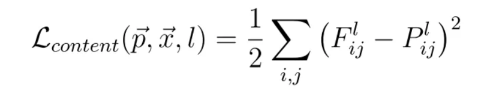STYLE LOSS
GramMatrix of style image
Here k and k' represents different filters or channels of the layer L. Let's call this Gkk'[l][S].
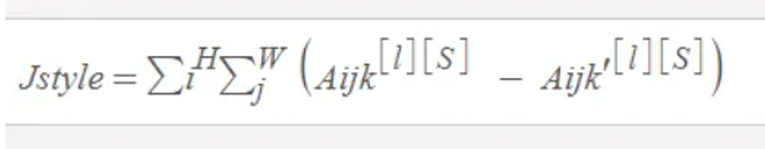Grammatrix of generated image
Here k and k' represents different filters or channels of the layer L.Let's call this Gkk'[l][G].
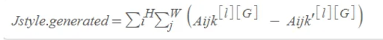Style cost function
Cost function between Style and Generated Image is the square of difference between the Gram Matrix of the style Image with the Gram Matrix of generated Image.
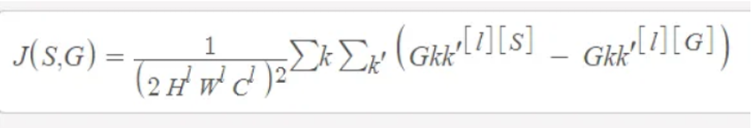TOTAL LOSS
The total loss function is the sum of the cost of the content and the style image.Mathematically,it can be expressed as :
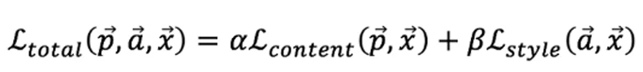
- Ɑ-Alpha represents the weight or importance assigned to the content loss. A higher value of alpha emphasizes preserving the content of the input image in the generated stylized image. It controls how much the stylized image resembles the content image in terms of shapes, objects, and structures.
- β-Beta represents the weight or importance assigned to the style loss. A higher value of beta accentuates the style transfer aspect, prioritizing the artistic style of the reference image in the generated stylized image. It controls the level of texture, color, and visual patterns borrowed from the style image.
The values of alpha and beta are typically set before the optimization process begins. Fine-tuning these hyperparameters allows users to adjust the balance between content and style, leading to different visual effects and stylization outcomes. The optimal values of alpha and beta depend on the desired artistic result and can vary depending on the specific neural style transfer implementation or application.
IMPLEMENTATION
Importing requirements
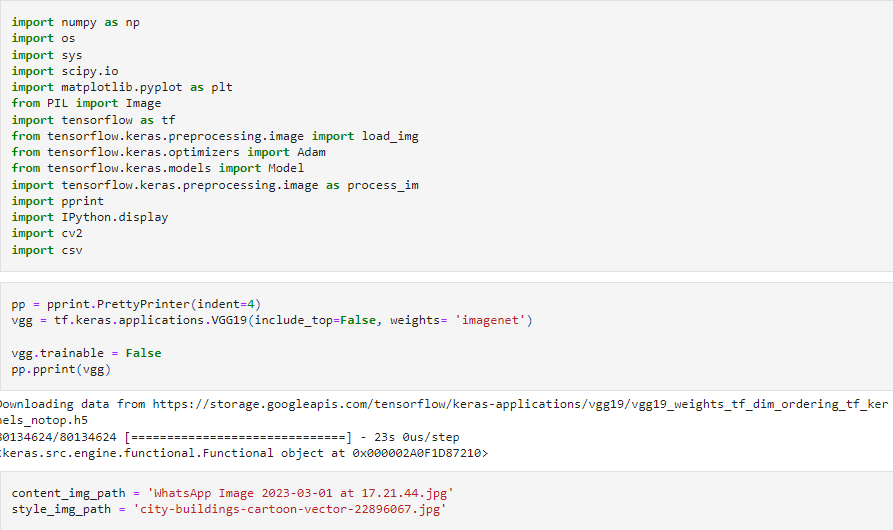Helper functions
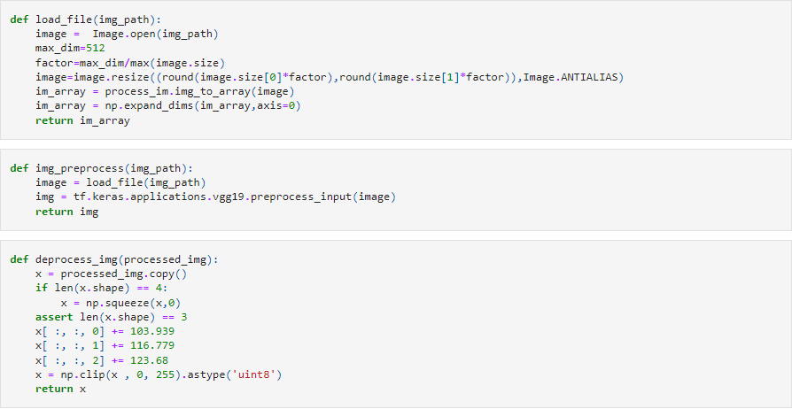defining model
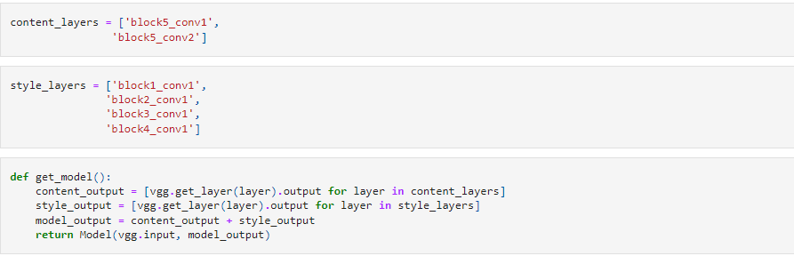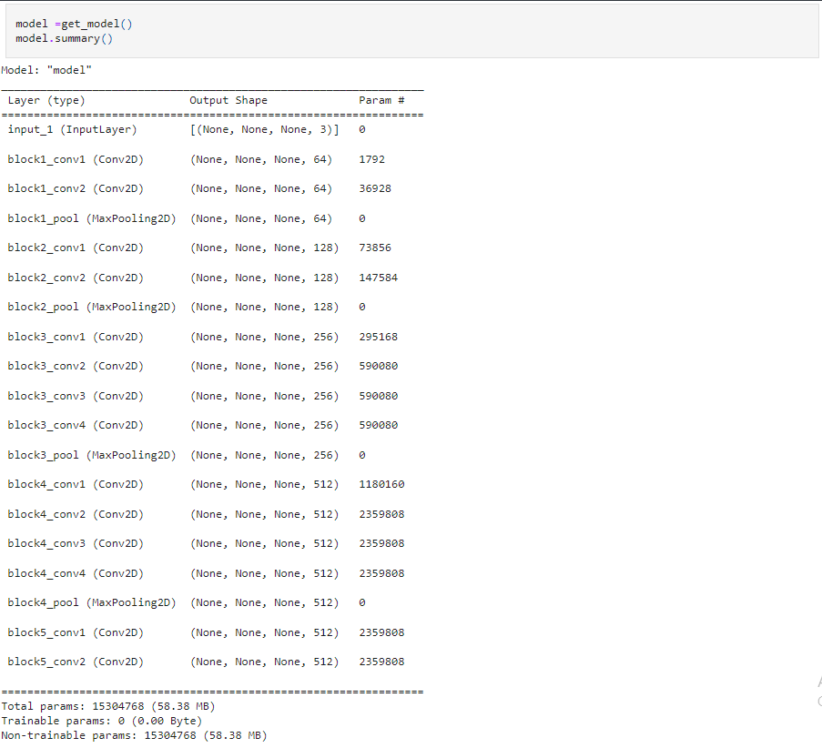
Loss Function
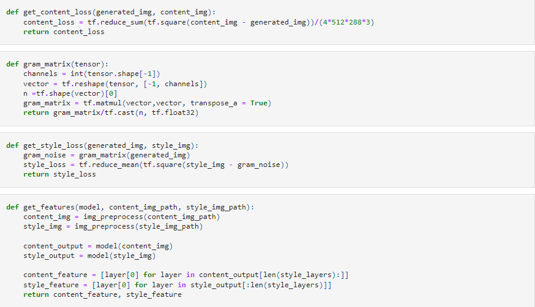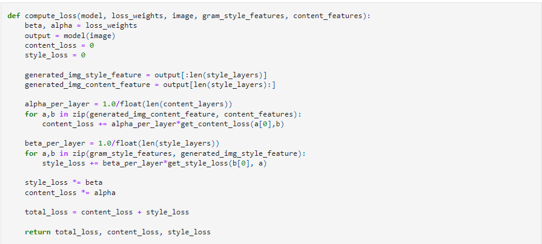
Model Training
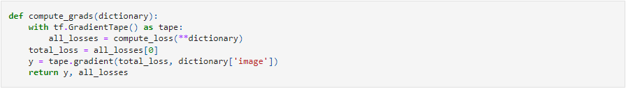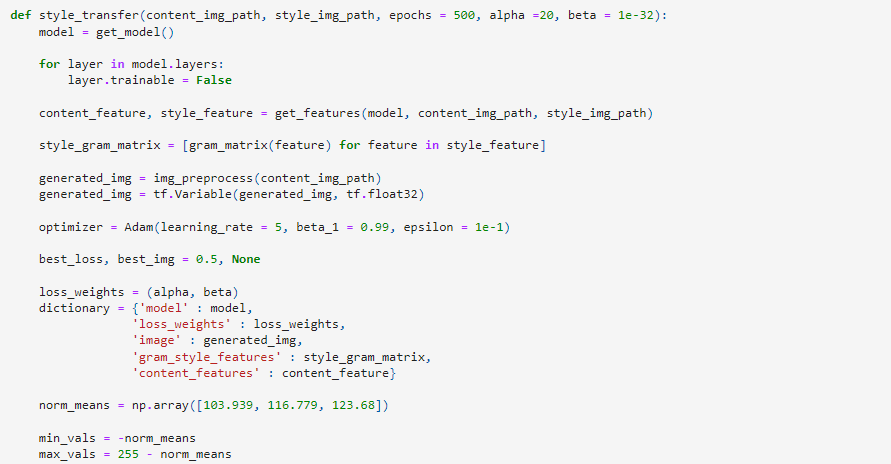
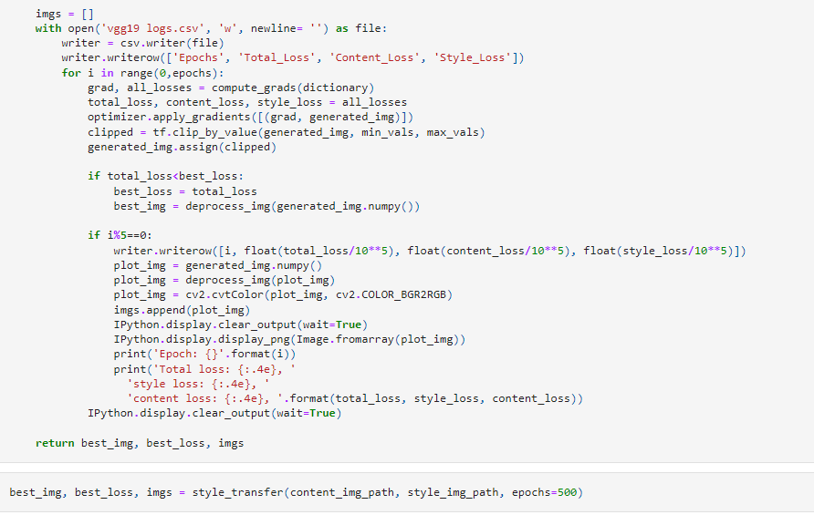